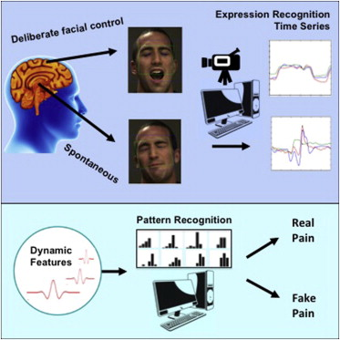
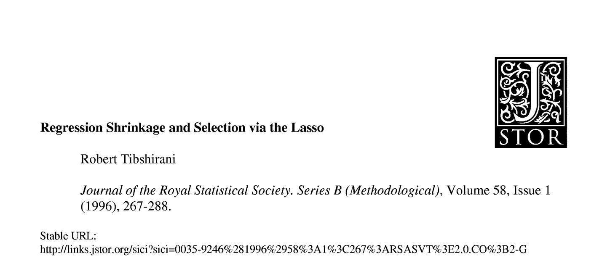
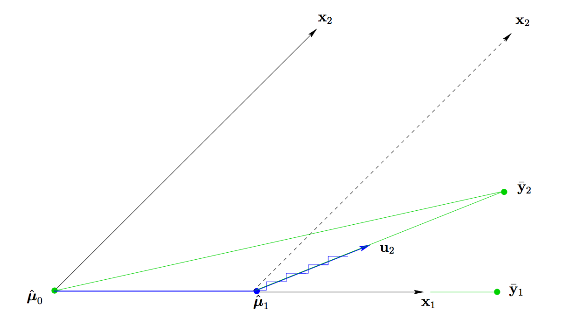
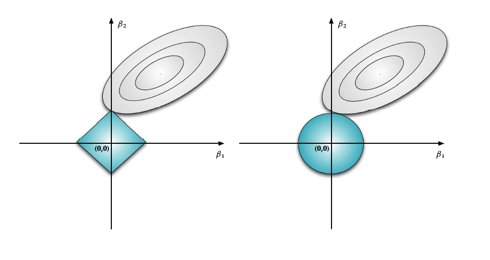
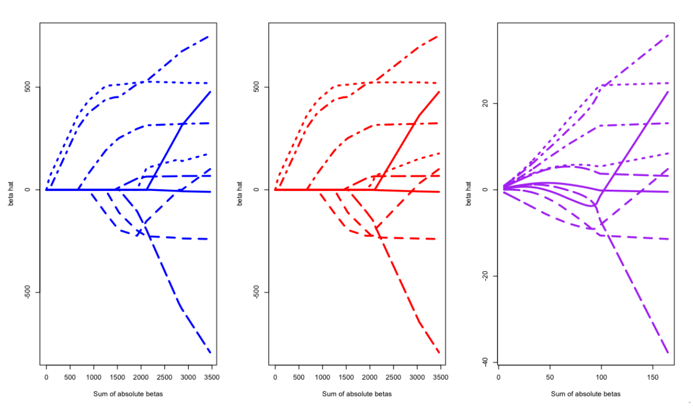

Be judicious in your choice of dependencies (theoretical, software, career). Every dependency you add is one more potential failing point of your (theorem,software,career). That being said, no dependencies is the surest path to disaster. Ramnath whenever possible (build incredible things at high speed by repurposing old tools in the most creative way possible)
Penalized regression
Jeffrey Leek
Johns Hopkins Bloomberg School of Public Health
Pro tip
Paper of the day
Automatic decoding of facial movements reveals deceptive pain expressions

Agenda
- Finish testing
- Regularization
- EM Algorithm
- Multiple testing
- Empirical Bayes and local false discovery rates
- Smoothing
- GAMs
- Wavelets
- Splines
Agenda (cont.)
- Machine learning
- Random Forests
- CART
- Model blending
- Bagging
- Boosting
- Simulation
- Causal inference (time permitting)
- Time series (time permitting)
- Recommender systems (time permitting)
Today: penalized regression

You should care because
- Now a standard tool
- Tons of people work on it
- Interesting/clever theory to be done
Defining some terms
Loss function: \(L \left\{Y,f(X)\right\}\)
- \(L \left\{Y,f(X)\right\} = \left\{Y-f(X)\right\}^2\)
- \(L\left\{Y,f(X)\right\} = |Y-f(X)|\)
- \(L\left\{Y,f(X)\right\} = \left\{\begin{array}{cc} 0 & if \; Y=f(X)\\ 1 & else \end{array}\right.\) (binary data)
Expected prediction error (EPE): \(E_X E_{Y|X}\left[\{Y-f(X)\}^2| X\right]\)
- For squared error loss this is minimized by conditional expectation
- \(f(x) = E[Y | X = x]\)
Regression function: \(f(x)\)
Training error: \(\frac{1}{N} \sum_{i=1}^N \{y_i - \hat{f}(x_i)\}^2\)
An example
\[Y = \beta_0 + \beta_1 X_1 + \beta_2 X_2 + \epsilon\]
where \(X_1\) and \(X_2\) are nearly perfectly correlated (co-linear). You can approximate this model by:
\[Y = \beta_0 + (\beta_1 + \beta_2)X_1 + \epsilon\]
The result is:
- You will get a good estimate of \(Y\)
- The estimate (of \(Y\)) will be biased
- We may reduce variance in the estimate
Prostate cancer
library(ElemStatLearn); data(prostate)
str(prostate)
'data.frame': 97 obs. of 10 variables:
$ lcavol : num -0.58 -0.994 -0.511 -1.204 0.751 ...
$ lweight: num 2.77 3.32 2.69 3.28 3.43 ...
$ age : int 50 58 74 58 62 50 64 58 47 63 ...
$ lbph : num -1.39 -1.39 -1.39 -1.39 -1.39 ...
$ svi : int 0 0 0 0 0 0 0 0 0 0 ...
$ lcp : num -1.39 -1.39 -1.39 -1.39 -1.39 ...
$ gleason: int 6 6 7 6 6 6 6 6 6 6 ...
$ pgg45 : int 0 0 20 0 0 0 0 0 0 0 ...
$ lpsa : num -0.431 -0.163 -0.163 -0.163 0.372 ...
$ train : logi TRUE TRUE TRUE TRUE TRUE TRUE ...
Subset selection

Most common pattern

Model selection approach: split samples
No method better when data/computation time permits it
Approach
- Divide data into training/test/validation
- Treat validation as test data, train all competing models on the train data and pick the best one on validation.
- To appropriately assess performance on new data apply to test set
- You may re-split and reperform steps 1-3
Two common problems
- Limited data
- Computational complexity
Decomposing expected prediction error
Assume \(Y_i = f(X_i) + \epsilon_i\)
\(EPE(\lambda) = E\left[\{Y - \hat{f}_{\lambda}(X)\}^2\right]\)
Suppose \(\hat{f}_{\lambda}\) is the estimate from the training data and look at a new data point \(X = x^*\)
\[E\left[\{Y - \hat{f}_{\lambda}(x^*)\}^2\right] = \sigma^2 + \{E[\hat{f}_{\lambda}(x^*)] - f(x^*)\}^2 + var[\hat{f}_\lambda(x_0)]\]
\[Err(x_0) = E[(Y - \hat{f}_{\lambda})^2 | X = x_0] = \sigma^2 + \left[f(x_0) - E\hat{f}(x_i)\right]^2 + ||h(x_0)||^2\sigma^2\]
\(h(x_0) = X(X^TX)^{-1}x_0\) is the set of linear weights so \(var[\hat{f}_{\lambda}(x_0)] = ||h(x_0)||^2 \sigma^2\).
Bias-variance tradeoff
- This decomposition is known as a bias-variance tradeoff
- As the model becomes more complex (more terms) you reduce bias by getting local structure/curvature
- But coefficient estimates suffer from high variance for more terms/colinear terms
- So introducing a little bias in our estimate for \(\beta\) might lead to substantial decrease in MSE
Hard thresholding
Model \(Y = f(X) + \epsilon\)
Set \(\hat{f}_{\lambda}(x) = x'\beta\)
Constrain only \(\lambda\) coefficients to be nonzero.
Selection problem is after chosing \(\lambda\) figure out which \(p - \lambda\) coefficients to make nonzero
Shrinkage and penalties
The classic shrinkage result is the James-Stein estimator. Suppose \(Y_i \sim N(\theta, \sigma^2 I)\) where we would like to estimate \(\hat{\theta}\) on the basis of the \(Y\) variables and \(\sigma^2\) is known.
Then we know what estimator we would usually choose \(\hat{\theta} = \bar{Y}\).
Stein showed that if the goal is to minimize the mean squared error \(\e[(\theta - \hat{\theta})^2]\) and we have \(n \geq 3\) observations, we can always do better than the mean with estimators like this: \[\hat{\theta}_{JS} = \left(1-\frac{(m-2)\sigma^2}{||\bar{Y}||^2}\right)\bar{Y}\]
Even more surprising, if we consider any direction \(\nu\) \[\hat{\theta}_{JS}=\left(1-\frac{(m-2)\sigma^2}{||\bar{Y} - \nu||^2}\right)(\bar{Y} - \nu) + \nu\] also has lower MSE than the mean!!
Shrinkage and penalties
Shrinkage can be thought of as "constrained" minimization.\vsp Minimize:
\(\sum_{i=1}^n (Y_i - \mu)^2\) subject to \(\mu^2 \leq c\)
Differentiating:
\[-2 \sum_{i=1}^n (Y_i - \hat{\mu}_c) + 2\lambda_c \hat{\mu}_c = 0\]
So
\(\hat{\mu}_c = \frac{\sum_{i=1}^nY_i}{n + \lambda_c} = K_c\bar{Y}\) where \(K_c < 1\)
The precise form of \(\lambda_c\) is unimportant: as \(c \rightarrow 0\), \(\hat{\mu} \rightarrow \bar{Y}\), as \(c \rightarrow \infty\), \(\hat{\mu}_c \rightarrow 0\).
Shrinkage and penalties
- Giving up bias to reduce variance
- Not all biased models are better - we need to find ``good'' biased models
- Generalized one-sample problem: penalize large values of \(\beta\) this should lead to ``multivariate'' shrinkage
- Heuristically, many \(\beta > 0\) is interpreted as complex model.
- For good penalties there is often an equivalent Bayesian interpretation
- If the truth is really complex, this may not work! (But it will then be hard to build a good model anyway...)
Another issue for high-dimensional data
small = prostate[1:5,]
lm(lpsa ~ .,data =small)
Call:
lm(formula = lpsa ~ ., data = small)
Coefficients:
(Intercept) lcavol lweight age lbph svi lcp
9.6061 0.1390 -0.7914 0.0952 NA NA NA
gleason pgg45 trainTRUE
-2.0871 NA NA
Regularization for regression
If the \(\beta_j\)'s are unconstrained:
- They can explode
- And hence are susceptible to very high variance
To control variance, we might regularize/shrink the coefficients.
\[ PRSS(\beta) = \sum_{j=1}^n (Y_j - \sum_{i=1}^m \beta_{1i} X_{ij})^2 + P(\lambda; \beta)\]
where \(PRSS\) is a penalized form of the sum of squares. Things that are commonly looked for
- Penalty reduces complexity
- Penalty reduces variance
- Penalty respects structure of the problem
Ridge regression
Solve:
\[ \sum_{i=1}^N \left(y_i - \beta_0 + \sum_{j=1}^p x_{ij}\beta_j \right)^2 + \lambda \sum_{j=1}^p \beta_j^2\]
equivalent to solving
\(\sum_{i=1}^N \left(y_i - \beta_0 + \sum_{j=1}^p x_{ij}\beta_j \right)^2\) subject to \(\sum_{j=1}^p \beta_j^2 \leq s\) where \(s\) is inversely proportional to \(\lambda\)
Solution is:
\[\hat{\beta}^{ridge} = (X^TX + \lambda I)^{-1} X^T y\]
Inclusion of \(\lambda\) makes the problem non-singular even if \(X^TX\) is not invertible. (this was the original motivation for ridge regression - see Hoerl and Kennard 1970)
Ridge coefficient paths

Tuning parameter \(\lambda\)
- \(\lambda\) controls the size of the coefficients
- \(\lambda\) controls the amount of {\bf regularization}
- As \(\lambda \rightarrow 0\) we obtain the least square solution
- As \(\lambda \rightarrow \infty\) we have \(\hat{\beta}_{\lambda=\infty}^{ridge} = 0\)
SVD, PCA and ridge regression
\[X = UDV^T\]
\[\hat{y} = X\hat{\beta} X(X^TX)^{-1}X^Ty = UU^Ty\]
\[ X\hat{\beta}^{ridge} = X(X^TX + \lambda I)^{-1} X y\]
\[ = UD(D^2 + \lambda I)^{-1} DU' y\]
\[ = \sum_{j=1}^p u_j \frac{d_j}{d_j + \lambda} u_j^Ty\]
Notice that \(\lambda > 0, \frac{d_j}{d_j + \lambda} \leq 1\).
Lasso
\(\sum_{i=1}^N \left(y_i - \beta_0 + \sum_{j=1}^p x_{ij}\beta_j \right)^2\) subject to \(\sum_{j=1}^p |\beta_j| \leq s\)
also has a lagrangian form
\[ \sum_{i=1}^N \left(y_i - \beta_0 + \sum_{j=1}^p x_{ij}\beta_j \right)^2 + \lambda \sum_{j=1}^p |\beta_j|\]
For orthonormal design matrices (not the norm!) this has a closed form solution
\[\hat{\beta}_j = sign(\hat{\beta}_j^0)(|\hat{\beta}_j^0 - \gamma)^{+}\]
but not in general.
Computing lasso solutions -least angle regression

http://www.stanford.edu/~hastie/Papers/LARS/LeastAngle_2002.pdf
Why does the lasso produce zeros?

Forward stagewise
- Start with residual \(R = Y\) and \(\beta_j = 0 \forall j\)
- Find the predictor \(X_j\) most correlated with \(R\)
- Update \(\beta_j = \beta_j + \delta\) where \(\delta_j = e \times sign(X^T_j R)\)
- Set \(R \leftarrow R - \delta_j X_j\)
Paths of lasso/lars/stagewise in R
library(lars); data(diabetes); library(MASS); dim(lars1$x)
length(diabetes$y)
mod1 = lars(diabetes$x,diabetes$y,"lasso")
mod2 = lars(diabetes$x,diabetes$y,"forward.stagewise")
mod3 = lm.ridge(diabetes$y ~ diabetes$x,lambda=seq(0,2e4,by=20))
par(mfrow=c(1,3))
matplot(cbind(apply(abs(mod1$beta),1,sum)),mod1$beta,col="blue",type="l",
lwd=3,xlab="Sum of absolute betas", ylab="beta hat")
matplot(cbind(apply(abs(mod2$beta),1,sum)),mod2$beta,col="red",type="l",
lwd=3,xlab="Sum of absolute betas", ylab="beta hat")
matplot(cbind(apply(abs(mod3$coef),2,sum)),t(mod3$coef),type="l",col="purple",
lwd=3,xlab="Sum of absolute betas", ylab="beta hat")
Coefficient path comparison

I prefer simpler in many cases

http://simplystatistics.org/2014/01/04/repost-prediction-the-lasso-vs-just-using-the-top-10-predictors/ http://simplystatistics.org/2014/03/12/oh-no-the-leekasso/